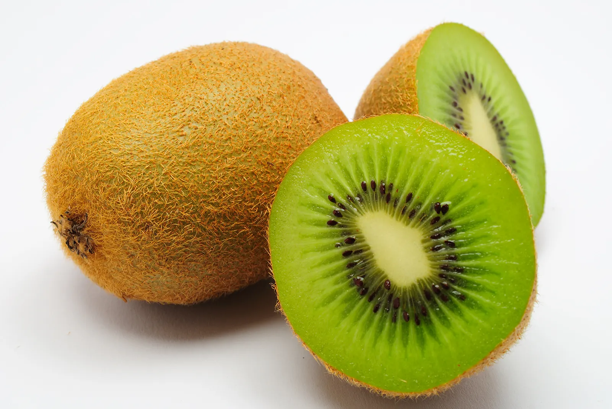
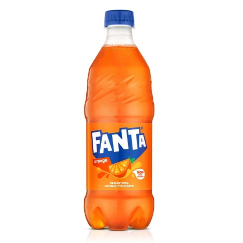

Shopping List
Got bored shopping? Click Here for free games to play!
If your wife is asking for proof that you got everything use this:

- Dairy
- Whole Milk
- Laughing Cow Light
- Mexican Style Cheese MIX
- Sour Cream

- Greek Yogurt
- American Cheese
- Meat
- Ground Beef

- Steak
- Chicken Drumsticks
- Pork Ribs
- Chicken Breasts
- Bacon
- Roast Beef
- Vegetables
- Tomatoes
- Cucumbers

- Bell Peppers

- Broccoli

- Baby Carrots
- Onion

- Fruits
- Apples

- Wateremlon
- Strawberries
- Pineapple

- Grapes

- Kiwi

- Frozen Products
- Chicken Nuggets
- Pizza Bites
- Frozen Vegetables
- French Fries

- Zapiekanki
,
- Drinks
- Coca Cola
- Arizona

- Fanta

- Sprite
- Tea
- Gatorade